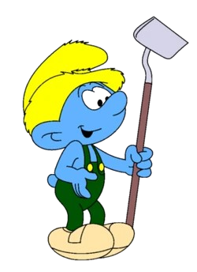
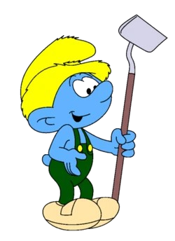
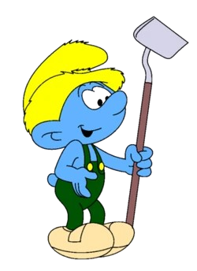
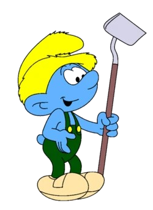

It’s thanks to Farmer Smurf that Chef’s meals are so good. How delicious can a cake be if the ingredients aren’t the best? He’s in charge of growing and harvesting all the food the Smurfs eat, and he takes his job very seriously, always talking to his crops to help them grow. Pumpkin, you’re perfectly round! No matter whom he’s talking to, he does it in a fun, “farming flavored” language.